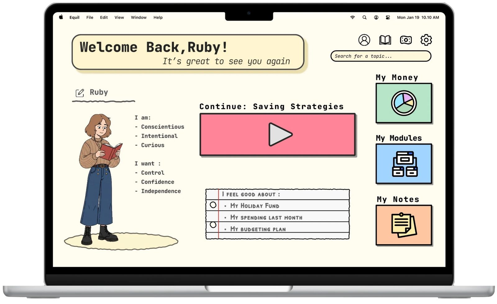

Case studies
Projects & research
Four projects spanning end-to-end product design, behavioural research, and systems-level UX thinking.

Sketchscroll: A Psychologically Informed Solution to Brainrot Using AI
UX Designer · 3 days
User Research, Persona, Development, Wireframing, Prototyping, Usability Testing.
Read case study →

Equil: Closing the Financial Literacy Gap with Research-Informed Design
UX Designer · 4 weeks
An equitable financial literacy tool designed with and for young women.
Read case study →
Reframing Neurodivergence In Schools
A Systems-Thinking Approach to Reducing Student Exclusions
Lead Researcher & Behavioural Analyst
UX Artefact Translation, Inclusive Design Thinking, Service Interventions.
Read case study →
Risky Driving Research
Social Influences and Risky Driving
Lead Researcher · 9 months · University of Exeter
Using telematics to analyse how social context shapes driver behaviour.
Read case study →